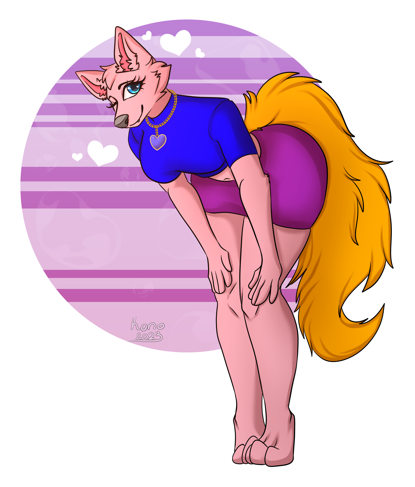

Ultra the Wolf

This is Ultra.
Ultra is a nice and cuddly pink wolf who enjoys being happy and making others feel the same way. She enjoys sight-seeing and is very fond of nature. She loves her friends and those who are by her side.
Although, she tends to have confliction with herself and what she feels within her soul. In her heart, it feels like her spirit is being withheld by what's around her and her decisions. Unfortunately, she learned the hard way of innocence being broken.
The Spirit Tree and The Ghost Tree, two different planes connected to her soul and memories.
The Spirit Tree resonates with her personality and soul the most, allowing her to achieve peace and healing.
It contains memories deep within Ultra's heart that have help her advance forward in her life and the relationships she has.
The Ghost Tree holds memories deep inside Ultra's heart that bring out her emotions. Grim and dark moments reside in the realm, giving Ultra the hard reality of what it means to lose herself.
Both realms clash with each other in her heart, illuminating a path of light and another path of darkness for Ultra to walk.
The Spirit Tree
The Ghost Tree